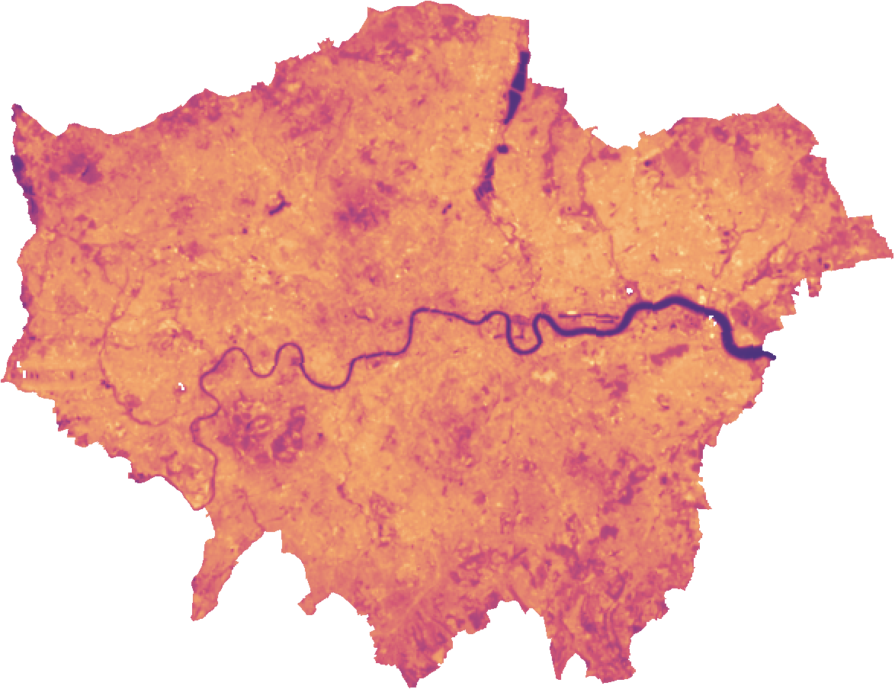

Reconstruct the event
Use daily reanalysis and station observations to identify the days and hours that frame a case.
Weather and observation methodsHeatline helps researchers examine how historical heatwaves vary across cities, where residents live and along walking routes. Trace each result to its data, geographic coverage and calculation.

Use daily reanalysis and station observations to identify the days and hours that frame a case.
Weather and observation methodsTest whether resident groups live near hotter surfaces and check the share of each group represented by valid satellite pixels.
Population and census weightingEstimate thermal stress along covered paths and explore the change if a share of sunlit length had building shade.
Pedestrian UTCI and shade methodsUse the provider links to acquire the original datasets. The published case catalog records the dates, display grids, boundary files and model coverage used in Heatline.
Greater London uses an administrative boundary. The other cases use functional urban areas (FUAs), which include their commuting zones. The European FUA polygons come from GISCO’s 2021 1:100,000 release. These boundaries are held fixed across archived events. Street simulations have their own coverage inside each study boundary.
| Study area | Boundary definition | Street model coverage | Boundary files |
|---|---|---|---|
| London | Greater London administrative polygon | Full study area · 129,280 cells | GLA boundary downloadHeatline GeoJSON for London |
| Utrecht NL042F | Eurostat GISCO FUA 2021 | Full FUA · 46,814 cells | GISCO 2021 filesHeatline GeoJSON for Utrecht |
| Amsterdam NL001F | Eurostat GISCO FUA 2021 | Municipality within FUA · 13,276 cells | GISCO 2021 filesHeatline GeoJSON for Amsterdam |
| Paris FR001F | Eurostat GISCO FUA 2021 | Central pilot · 195 cells | GISCO 2021 filesHeatline GeoJSON for Paris |
| Lille FR003F | Eurostat GISCO FUA 2021 | Central pilot · 196 cells | GISCO 2021 filesHeatline GeoJSON for Lille |
| Brussels BE001F | Eurostat GISCO FUA 2021, including Leuven and Mechelen | Central pilot · 196 cells | GISCO 2021 filesHeatline GeoJSON for Brussels |
| Seattle USA14F | OECD FUA, boundary vintage unspecified in the source layer | June 2021 archive pilot · 183 cells | OECD FUA downloadsHeatline GeoJSON for Seattle |
| Portland USA20F | OECD FUA, boundary vintage unspecified in the source layer | June 2021 archive pilot · 172 cells | OECD FUA downloadsHeatline GeoJSON for Portland |
European reference street models use 18 July 2022 at 10:52:15 UTC, the timestamp used by the 2022 street-analysis tools. Seattle and Portland have pilot inputs from the Pacific Northwest heatwave on 28 June 2021 at 20:00 UTC, available through their archived shade cases. In all cases, coverage refers to represented walking length within the model footprint.
Published study and model catalogEvent catalogOriginal GISCO FUA GeoJSON · WGS 84
Each section identifies the calculation, the denominator or model footprint, and the atlas output that uses it.
Event windows and core dates come from the case catalog. The global view displays the archived daily maxima on sampled land cells. The regional archive uses complete UTC days and reports a daily population-weighted statistic across valid cells.
Here Pc is the sum of GHS-POP 2020 residents at 100 m cell centres within weather cell c and the study polygon. Daily minima use the same rule with the hourly minimum. Daily means use the 24-hour average. Population coverage divides the matched weight by total boundary population. Globe values supplied in kelvin are converted using T°C = TK − 273.15.
The separate reference-point panel uses the supplied 1991–2020 daily mean and 90th percentile at its reference grid point. The anomaly is Tmax,d − Tmean ref,d. The 15-day excess heat is ∑d max(0, Tmax,d − P90,d) in °C·days. The atlas displays the archived climatology and summary for that point.
For a single station, the peak is the maximum valid reading and the mean is the arithmetic mean over available observations. For a station comparison, use the intersection H of exact UTC timestamps with valid values for the variable. WOW station correlations use paired temperature and weather values with at least six observations and nonzero variation in both series.
The panels retain observation gaps. The London chart flags community peaks for review when they exceed the official UK event record. A station correlation describes co-variation over the matched period.
Muñoz-Sabater et al. (2021) · ERA5-Land, Sect. 2Weather datasetsStation calculation codeOpen The heatwave ↗
Landsat Collection 2 Level-2 surface temperature uses a USGS single-channel retrieval with thermal radiance, emissivity and atmospheric profiles. Heatline converts the delivered ST_B10 digital numbers to °C. For the documented rebuild, valid values use DN > 0 with QA_PIXEL & 63 = 0, filtering fill, dilated cloud, cirrus, cloud, cloud shadow and snow flags.
| Quantity | Formula | Inputs or interpretation |
|---|---|---|
| LST | Ts = 0.00341802 × DN + 149 − 273.15 | Surface temperature in °C, using ST_B10. |
| Reflectance | ρ = 0.0000275 × DN − 0.2 | Apply the scaling and offset to each reflectance band before computing an index. |
| NDVI | (ρ5 − ρ4) / (ρ5 + ρ4) | Near infrared and red. Vegetation context. |
| NDWI | (ρ3 − ρ5) / (ρ3 + ρ5) | Green and near infrared. Open-water context. |
| MNDWI | (ρ3 − ρ6) / (ρ3 + ρ6) | Green and shortwave infrared 1. Modified open-water index. |
Landsat 8 and 9 thermal observations have a nominal 100 m sensor resolution and are delivered on the 30 m product grid. For the seven FUAs, valid Landsat temperatures are averaged onto the 100 m analysis grid. The rebuild mosaics same-day scenes by filling gaps from qualifying scenes in ascending scene cloud cover. FUA overview rasters use a coarser display grid. The detailed London LST map displays 100 m cells and the local statistics use the documented Landsat match or census window.
The atlas labels the actual overpass and distinguishes a scene in the event core from a background snapshot. Terrain overview grids represent continuous surface elevation. WorldCover grids show the dominant valid land-cover class.
USGS · surface-temperature scalingUSGS · QA_PIXEL bit tableUSGS · sensor resolutionsTucker (1979) · NDVIMcFeeters (1996) · NDWIXu (2006) · MNDWIMosaic and clipping code
Assign the clear scene LST at each included 100 m GHS-POP cell centre. For group analyses in the seven FUAs, allocate each census unit’s group counts in proportion to its GHS-POP weights. The same allocation applies to the group’s eligible population where a separate universe is supplied.
Nu,g is the census count for group g in unit u. Pi is the GHS-POP count in cell i. The allocation denominator uses the whole census unit, including the fraction outside the study boundary. A map selection keeps only the inside portion. For all-resident atlas and cross-city LST, the weights are the GHS-POP counts directly.
Matched weights have valid LST. The results report the weighted mean, match rate Cg, first-minus-reference difference and the count or share in a displayed LST band. The formula for any band replaces the 45 °C condition with that band’s bounds. The 45 °C cutoff is a descriptive surface-temperature threshold.
In the detailed July 2022 London case, each ONS Output Area (OA) gets the arithmetic mean of valid native Landsat pixels in the 5 × 5 window around its geometric centroid. With m valid pixels, TOA = (∑j Tj) / m. Use the actual 2021 OA group counts in the weighted mean. IMD deciles 1–2 and 9–10 are assigned via the neighbourhood lookup, applying IMD 2025 retrospectively.
District rankings sort the selected group’s matched mean LST. A map tile’s group share is ∑ group residents ÷ ∑ eligible residents among the matched cells in that tile. Age, deprivation, disability and poverty groups can overlap. Use the reported group coverage when comparing estimates.
Population and census downloadsCensus gridding codeLondon OA calculationRegional residential calculationOpen Who was exposed? ↗
Heatline’s archived runs use SOLWEIG 0.1.0b96. The model estimates the shortwave and longwave radiation a person receives using sun position, terrain, building and canopy geometry, and hourly weather. The equations below represent the directional radiation balance.
Kk and Lk are the shortwave and longwave fluxes in W/m² by direction. Fk is the angular weight, αsw is shortwave absorptivity, εp is emissivity and σ is the Stefan–Boltzmann constant. The implemented solver includes geometry-dependent radiation terms. Use the model paper and manual for the full radiation scheme.
The expanded street runs use a 5 m grid with 1.9 km model cores and a 400 m buffer on each side. Height above ground is H = max(DSM − DTM, 0), using co-registered surfaces. The building mask retains building heights. Outside buildings the current runs use residual heights from 2 to 30 m as a canopy proxy. Geometry dates are recorded independently of the heatwave date.
Tile-centre forcing uses linear interpolation between supported weather locations and a nearest-source fallback. It uses a four-hour warm-up. For a fractional hour f, air temperature, humidity and wind are interpolated as xt = (1 − f)xh + fxh+1. The following timestamp provides the preceding-hour shortwave mean. Wind in km/h is divided by 3.6. Walking samples use eligible clipped road and path geometry.
The Universal Thermal Climate Index expresses the equivalent temperature of a reference outdoor environment for a modeled thermophysiological response. The operational approximation adds a sixth-order polynomial offset to air temperature.
Ta and Tmrt are in °C, v10 is the 10 m wind in m/s, pa is vapour pressure in kPa and RH is relative humidity in percent. The exact coefficient table used by Heatline is linked below.
F(K) = 2.7150305 ln(K) − 2836.5744/K² − 6028.076559/K + 19.54263612 − 0.02737830188 K + 0.000016261698 K² + 7.0229056×10⁻¹⁰ K³ − 1.8680009×10⁻¹³ K⁴The Worker evaluates UTCI for each modelled radiation sample before aggregation. A sample s has UTCI Us and represented path length ℓs. The published 100 m cells report a length-weighted UTCI and length Li. Expanded runs retain cells with at least 20 m of total eligible path. A drawn selection uses the published sampling points for inclusion.
The 1 °C histogram uses the same length share within each band. Hotspots rank the highest cell UTCI values. Large selections can display a 500 m weighted overview and return to 100 m detail on zoom. Statistics use the 100 m cells.
| UTCI in °C | Heatline category |
|---|---|
| <26 | Below 26 °C |
| 26 to <32 | Moderate |
| 32 to <38 | Strong |
| 38 to <46 | Very strong |
| ≥46 | Extreme |
Lindberg, Holmer & Thorsson (2008) · SOLWEIG radiation modelSOLWEIG manual · radiation and inputsSOLWEIG solver sourceBröde et al. (2012) · Table 3 and Supplement ESM 3Exact UTCI coefficientsStreet model preparation codeOpen At street level ↗
An eligible 100 m cell contains at least 20 m of represented walking length in sun and at least 20 m in building shade. Let f be the requested fraction from 0 to 1, Si the sunlit length, Li the total length and Usun,i and Ushade,i the existing paired, length-weighted UTCIs.
The scenario assigns existing building-shade UTCI to fSi metres of sunlit path and holds the weather, geometry and other routes fixed. Paired coverage is the paired length divided by the total modelled selection length. Where the full modelled selection is available, the second estimate uses that denominator. The separate sun–shade contrast reports the unweighted median of Usun,i − Ushade,i across eligible cells.
Radiation and UTCI equationsHeatline scenario implementationOpen What-if shade ↗
The review recomputes 100 m walking-cell UTCI and length by shade class for the selected city, model time and rectangle. It uses the same SOLWEIG inputs, UTCI equation and Act 4 building-shade assumption. Dim cells in the scenario map carry forward baseline UTCI. The reduction map marks areas without a valid pair in gray. The 500 m thermal overview weights source cells by walking length.
When a group is selected, the analysis joins each 100 m walking-cell centre to its census area. London uses ONS Census 2021 Output Areas, with ages 65+ and 0–14 from TS007A and daily activities limited a little or a lot from TS038. Matched coverage is the proportion of modelled walking length in cells with valid census counts for the selected group.
Here L represents walking length and N represents resident counts. The bounded heat term uses UTCI thresholds of 32 and 46 °C. The 500 m priority overview shows each tile’s highest 100 m score. The priority list takes the best scoring cell per census area, with only positive scores eligible. The all-routes view orders sunlit cells by UTCI and then sunlit length. Census weights describe residence. Field observations establish actual use, accessibility and waiting time.
ONS TS007A age bandsONS TS038 activity limitationCensus 2021 Output Area boundariesUTCI thresholds
The London street overlay reconstructs SOLWEIG direct-beam transmittance from 5 m terrain and surface heights in 1.9 km core tiles with 400 m buffers. It follows the historical model’s radiation interval and local solar geometry. Along each clipped OpenStreetMap way, the model checks samples at approximately 5 m spacing. An all-object transmittance of at least 0.8 indicates sun. A building-only value below 0.5 indicates building shade for the remaining samples. An all-object value below 0.5 then indicates canopy shade, with other valid samples classed as partial shade.
Length along the clipped way joins consecutive samples of the same class. Each displayed segment carries an original OSM way ID, its endpoints and the model time. These are modelled conditions along candidate walking centre-lines. The 2026-11-05 OSM snapshot provides the geometry for the 2022 weather replay. The report records the snapshot used and keeps the Act 4 temperature comparison at walking-cell scale.
Paired shade formulaLondon street shade inputsOpenStreetMap attributionOpen Review & advise ↗
A private study uses one footprint and a UTC event time. GeoJSON uses WGS 84 coordinates. Use north-up, georeferenced single-band GeoTIFFs for rasters and UTF-8 CSV for model inputs. File validation reports spatial coverage, units, dates and missing columns. The first release allows 12 MiB per file, 500,000 clipped raster pixels and 100,000 CSV data rows.
Residential analysis samples calibrated LST at population-cell centres and weights by people per pixel. Results record the matched resident denominator and the population reference year.
Walking heat needs coordinates, time, represented walking length, mean radiant and air temperature, relative humidity and 10 m wind. The analysis reports and excludes represented lengths outside the UTCI input range. Shade uses classes from the same snapshot. The shade scenario and field-priority methods apply the equations above to the uploaded layers and current selection.
Exports include CSV, GeoJSON and a reproducibility ZIP with the selection, source file checksums, model and application revisions, and input parameters. The study expiry is displayed in the workspace.
Population weightingUTCI inputsPaired shadeField priorityOpen Research Workspace ↗
The five city chapters can calculate one area or compare two areas from the same boundary layer with the same event, time and model settings. London uses 32 boroughs and the City of London from the December 2021 ONS boundary release. London Census Output Areas join by their ONS district code. Other city summaries use the intersection between the chosen unit and the published functional urban area.
European municipality boundaries are from GISCO LAU 2021. The Paris arrondissement layer covers the centre city. The United States has separate 2021 county, county subdivision and Census place layers. The select lists retain small boundary intersections and flag edge overlaps. Results report the fraction of the source unit inside the study area. © EuroGeographics for the administrative boundaries. Contains Ordnance Survey and ONS data © Crown copyright and database right.
Weather uses population-weighted daily 2 m air-temperature statistics at GHS-POP centres matched to valid gridded values. The coarse grid provides regional context. Residential LST uses matched resident or Census group counts. For either metric, the weighted mean is the sum of valid values times the relevant population divided by the sum of matched weights.
Walking UTCI, shade scenarios and field-priority calculations select modelled 100 m walking cells by centre and retain their represented lengths. The available walking model and date still define coverage. Review linework is clipped to the polygon. Both areas report matched resident or modelled walking coverage where applicable. A−B subtracts the valid estimates for the same timestamp. Share differences use percentage points.
ONS local authority boundariesGISCO LAUVille de ParisU.S. Census cartographic boundaries
Heatline reports a pairwise difference only when both snapshots fall within the event core, share the same UTC date, fall within 90 minutes in local solar time and match at least 80% of each area’s estimated residents. The local-solar-time separation is computed from the UTC time difference and the study-area centre longitudes.
t is in minutes and longitude λ is in degrees east. q is the matched residential share above or equal to the 45 °C LST threshold. When a comparison condition fails, the cards report each available dated snapshot with its own coverage.
The walking comparison uses same-time 100 m pilot grids from the same SOLWEIG engine and 5 m terrain workflow. It reports ΔUTCI = ŪA − ŪB and each pilot’s path-length distribution. Its comparison domain is the two modelled pilots, even where a single-city view has a larger model. The active comparison uses the July 2022 event.
Residential weights and coverageWalking weights and model timeComparison settings in the catalogOpen the Paris–Amsterdam LST comparison ↗Open the London–Paris UTCI comparison ↗
Atlas interprets requests for a city, event, map layer, selection or analysis tool. It uses built-in routing and can use Gemini tool selection where configured. Buttons and Atlas submit to the same validated analysis endpoints. The calculation code reads the published datasets and returns the statistics and map values for the chosen scope.
For a new street model, prepare-city-street.py runs SOLWEIG and packages the dated radiant-temperature and walking-length inputs. At request time, the Worker evaluates UTCI and the paired shade scenario from those inputs. The compatibility endpoint for the older London grid aggregates stored UTCI values.
Raster overviews average valid continuous values and take the dominant class for land cover. For a numeric legend with limits min and max, 3D bars represent values at or above min + 0.70(max − min). That cutoff applies to display. The analysis uses the full set of valid values in the selection.
Use the atlas to inspect a historical case, check data coverage and design follow-up analyses or field observations.